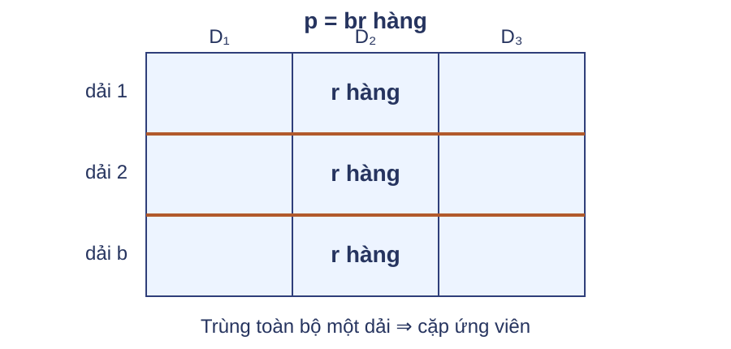
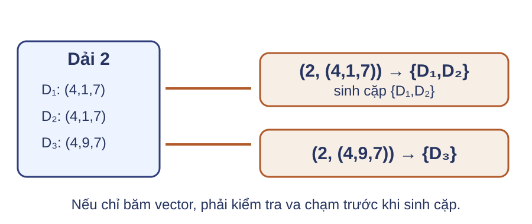
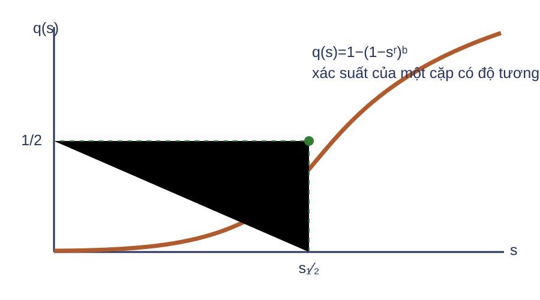
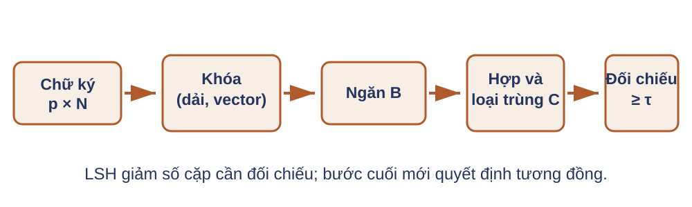
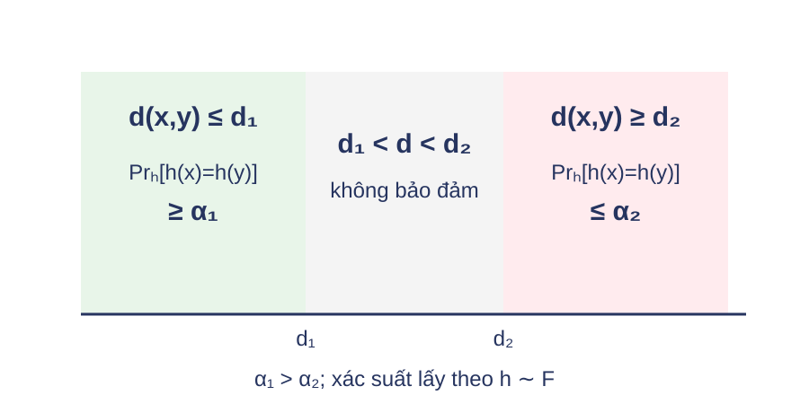
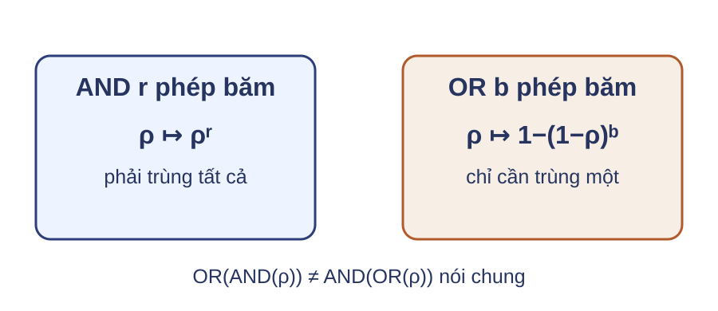
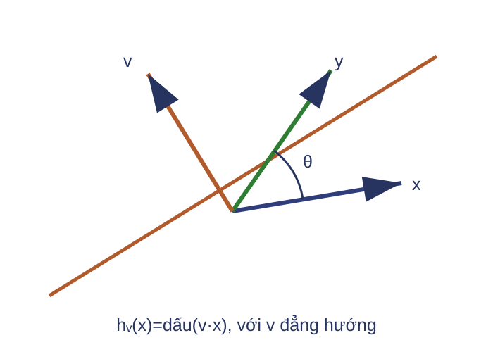
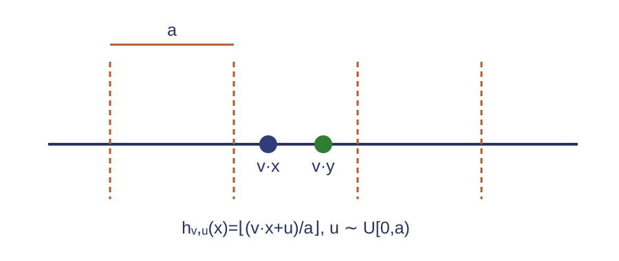
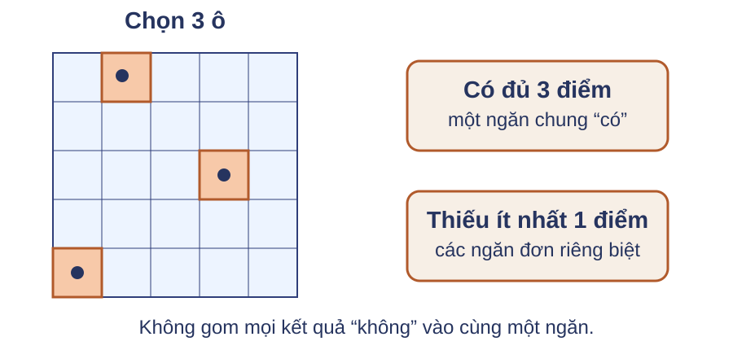

Phân dải chữ ký Ta cần một điều kiện rẻ hơn so sánh cả chữ ký, nhưng vẫn ưu tiên cặp có nhiều hàng trùng.
Câu hỏi: Có thể dùng một nhóm hàng làm dấu hiệu gặp nhau như thế nào?
Đây là bước vấn đề của chu trình phân dải (banding). Không trả lời ngay bằng công thức xác suất. Nguồn: MMDS §3.4.1, trang 92. Chia chữ ký thành các dải 
Một cặp trở thành ứng viên nếu trùng toàn bộ $r$ hàng trong ít nhất một dải.
Trực giác: AND trong một dải, OR qua các dải. Câu hỏi ở trang trước được trả lời bằng cách chia $p=br$ hàng thành $b$ dải, mỗi dải $r$ hàng; khóa dải trùng trọn hàng đưa cặp vào tập ứng viên. Nguồn: MMDS slide 40–43 và §3.4.1. Ví dụ chạy tay: một dải là đủ Dải $D_1$ $D_2$ $D_3$ 1 (2,5) (2,8) (7,5) 2 (4,1) (4,1) (4,9) 3 (6,3) (0,3) (6,9)
$\{D_1,D_2\}$ là ứng viên nhờ dải 2; hai cặp còn lại không trùng trọn dải nào.
Kiểm từng dải: chỉ D1 và D2 có cùng vector, tại dải 2. D1 và D3 có vài tọa độ riêng lẻ bằng nhau nhưng không có vector dải nào bằng nhau. Ví dụ nhỏ dựng lại từ quy tắc MMDS §3.4.1. Đặc tả điều kiện ứng viên $$\{i,j\}\in C\iff \exists\ell\in\{1,\ldots,b\}:\ \Sigma_{(\ell-1)r+1:\ell r,i}=\Sigma_{(\ell-1)r+1:\ell r,j}.$$
$\Sigma\in V^{p\times N}$, $p=br$. $C$ là tập cặp không thứ tự, đã loại trùng. Điều kiện này không khẳng định độ tương đồng cuối cùng đạt $\tau$. Nêu miền chỉ số và phân biệt ứng viên với kết quả. Nguồn: hình thức hóa MMDS §3.4.1. Khóa phải giữ toàn bộ vector dải 
Nếu bảng băm chỉ lưu mã rút gọn, phải so lại vector khi mã va chạm.
MMDS giả sử nhiều ngăn để bỏ qua va chạm. Bộ trang chiếu dùng toàn bộ vector làm khóa; cài đặt dùng mã băm vẫn phải kiểm tra hai khóa có bằng nhau hay không. Nguồn: MMDS §3.4.1, trang 93. Lập luận bao phủ của phép phân dải Nếu hai cột trùng toàn bộ dải $\ell$, chúng phát ra cùng khóa $(\ell,\text{vector})$. Chúng vào cùng ngăn của khóa đó. Khi liệt kê mọi cặp trong ngăn, cặp được thêm vào $C$. Vì vậy mọi cặp thỏa điều kiện phân dải đều xuất hiện trong $C$.
Lập luận cần hai điều kiện: ngăn được nhóm theo toàn bộ khóa và bộ giảm liệt kê đủ cặp. Nó không chứng minh mọi cặp tương đồng đều được chọn; phần sau mới nêu bảo đảm xác suất. Nguồn: suy ra từ MMDS §3.4.3. Kiểm tra các trường hợp biên $r=1$ Chỉ cần trùng một hàng; nhiều ứng viên.
$b=1$ Phải trùng cả chữ ký; ít ứng viên.
Câu hỏi: Với cùng ngân sách $p=br$, tăng $r$ đổi đánh đổi bỏ sót–va chạm sai theo ngưỡng $\tau$ như thế nào?
Không tuyên bố đơn điệu chung cho mọi $s$. Hướng đánh đổi: tăng $r$ (giảm $b$) làm giảm xác suất ứng viên ở vùng $s$ dưới ngưỡng, tức giảm va chạm sai nhưng tăng nguy cơ bỏ sót cặp gần ngưỡng; chiều ngược lại tăng ứng viên. Định lượng theo ngưỡng thuộc về $q(s)$ ở phần xác suất. Nhận định dựa trên mô hình MinHash độc lập. Nguồn: suy ra từ MMDS §3.4.2. Xác suất trở thành ứng viên Cố định một cặp có độ tương đồng Jaccard $s$. Ta cần tính xác suất cặp này trùng ít nhất một dải.
Đại lượng theo cặp, không phải tỷ lệ lỗi của kho
Đây là xác suất có điều kiện trên một cặp có độ tương đồng s. Muốn suy ra số lỗi toàn kho còn cần phân bố độ tương đồng và số cặp. Nguồn: MMDS §3.4.2. Một dải trùng với xác suất $s^r$ Mỗi hàng trùng với xác suất $s$; $r$ hàng độc lập.
$$\Pr[\text{trùng dải }\ell]=\underbrace{s\cdots s}_{r\text{ lần}}=s^r.$$
Do đó, xác suất không trùng dải đó là $1-s^r$.
Điều kiện độc lập nằm ở các hàng MinHash. Nếu tái sử dụng các hàng phụ thuộc nhau, phép nhân không còn là đẳng thức. Nguồn: MMDS §3.4.2, trang 93. Ví dụ chạy tay: $b=20,r=5,s=0.8$ Không dải nào $(1-0.8^5)^{20}\approx0.00035$
Có ít nhất một $\approx0.99965$
Theo mô hình, cặp có độ tương đồng 0,8 bị bỏ sót với xác suất khoảng 0,00035, gần 1 trên 2800. Nguồn: MMDS Ví dụ 3.12, trang 94. Công thức ứng viên $$q(s)=1-\Pr[\text{không dải nào trùng}]=1-(1-s^r)^b.$$
Độc lập trong dải cho $s^r$. Độc lập giữa các dải cho $(1-s^r)^b$. Lấy biến cố bù để có ít nhất một dải. Các dải dùng những hàng rời nhau; các hàng được mô hình là độc lập và có cùng xác suất trùng s. Khóa dải được so bằng toàn bộ vector. Nguồn: MMDS §3.4.2, trang 93–94. Xác suất ứng viên theo độ tương đồng 
Khi $b>1$ và $r>1$, $q(s)$ có dạng chữ S; độ dốc và vị trí chuyển tiếp do $b,r$ quyết định.
Nếu b=1 hoặc r=1, chỉ gọi đây là đường xác suất. Không tô diện tích hay gọi nó là tỷ lệ lỗi của kho. Slide MMDS trang 50 ghi nhầm “0.3%”; phép tính dùng s=.3, tức 30%, cho q≈.0474. Nguồn: MMDS slide 48–52, kiểm chứng §3.4.2. Ngưỡng xác suất một nửa $$q(s_{1/2})=\tfrac12\quad\Longrightarrow\quad s_{1/2}=(1-2^{-1/b})^{1/r}.$$
Với $b$ lớn:
$$2^{-1/b}=e^{-\ln2/b}\approx1-\frac{\ln2}{b},\qquad s_{1/2}\approx\left(\frac{\ln2}{b}\right)^{1/r}.$$
Dạng (1/b)^(1/r) trong một số slide chỉ là quy tắc rất thô; xấp xỉ bậc một đúng có ln 2. Nguồn: suy ra trực tiếp từ MMDS §3.4.2. Chọn $b,r$ dưới ràng buộc $p=br$ Chọn ngưỡng quyết định hậu kỳ $\tau$. Liệt kê các ước $r$ của $p$, đặt $b=p/r$. Tính $q(\tau)$ và xác suất cho các mức dưới $\tau$. Đối chiếu chi phí ứng viên với tài nguyên. Câu hỏi: Với $b=20,r=5$, cặp $s=0.3=30\%$ có $q(s)$ gần $0.047$ hay gần 0?
Đáp án: khoảng .0474, tức gần 0.047 hoặc 0.0475. Không dùng 0.3%; lỗi ghi trên slide MMDS trang 50 đã được điều phối viên xác minh trực tiếp và sửa thành s=0.3=30%. Với N=10^6, ngay xác suất nhỏ trên rất nhiều cặp vẫn có thể tạo chi phí lớn; cần phân bố s để ước lượng tổng. Nguồn: MMDS Ví dụ 3.12 và slide 50 đã sửa lỗi.
Từ công thức đến thuật toán $q(s)$ mô tả chất lượng lọc. Hệ thống vẫn cần gom ngăn, sinh cặp, loại trùng và đối chiếu hậu kỳ.
Tách phân tích xác suất khỏi đặc tả thuật toán. Nguồn: MMDS §3.4.3. Luồng tạo ứng viên 
Mỗi bước chỉ nhận dữ liệu từ bước trước; không cần khởi tạo mọi cặp.
Đây là trực giác trước khi nêu kiểu dữ liệu. Với một triệu chữ ký, ta quét từng cột và từng dải, không mở danh sách gần năm trăm tỷ cặp. Nguồn: MMDS §3.4.3. Vết chạy: ngăn trước, cặp sau Khóa Danh sách cột Cặp sinh $(1,(2,5))$ $[1,4,7]$ $\{1,4\},\{1,7\},\{4,7\}$ $(2,(4,1))$ $[1,4]$ $\{1,4\}$
Sau phép hợp, $C=\{\{1,4\},\{1,7\},\{4,7\}\}$.
Ví dụ này mở rộng các vector dải đã quen sang một tập chỉ số cột khác để minh họa quy tắc MMDS §3.4.3. Cặp 1,4 xuất hiện hai lần trước loại trùng nhưng chỉ một lần trong C. Thuật toán tạo ứng viên Điều kiện trước: $\Sigma\in V^{p\times N}$, $p=br$; khóa $(\ell,v)$ giữ toàn bộ $v\in V^r$.
C ← ∅
với mỗi cột i = 1..N:
với mỗi dải ℓ = 1..b:
thêm i vào B[ℓ, vector_dải(Σ,ℓ,i)]
với mỗi ngăn B:
với mỗi cặp không thứ tự {i,j} ⊆ B:
thêm {i,j} vào C
trả C
Điều kiện sau: $C$ chứa đúng các cặp trùng ít nhất một dải.
Vòng lặp hữu hạn: N cột, b dải, rồi danh sách ngăn hữu hạn. Tính đúng dựa trên khóa đầy đủ. Nguồn: MMDS §3.4.3, trang 95–96. Bất biến của giai đoạn sinh cặp Sau khi duyệt $t$ ngăn đã được gom xong, $C$ là hợp của mọi cặp không thứ tự nằm trong $t$ ngăn đó.
Khởi tạo: chưa duyệt ngăn nào, $C=\varnothing$. Duy trì: liệt kê đủ cặp của ngăn kế tiếp và lấy hợp. Kết thúc: đã duyệt mọi ngăn, nên $C$ đúng theo đặc tả ứng viên. Thuật toán có hai giai đoạn. Giai đoạn một xây xong các ngăn từ bN khối dải–cột. Bất biến này thuộc giai đoạn hai, khi lần lượt duyệt các ngăn đã hoàn tất. Phép hợp loại cặp lặp mà không làm mất cặp. Nguồn: lập luận từ MMDS §3.4.3. Chi phí tạo và đối chiếu ứng viên Tạo ứng viên $A=\sum_B\binom{|B|}{2}$ lượt sinh.
Chi phí thực tế $\Theta(pN+A)$; kỳ vọng $\Theta(pN+\mathbb E[A])$ với bảng băm; xấu nhất $A=\Theta(bN^2)$.
Bộ nhớ $O(bN+|C|)$ nếu khóa tham chiếu chữ ký.
Vật hóa khóa có thể tốn $O(pN)$.
Đối chiếu chữ ký tốn $O(p|C|)$ và chỉ ước lượng Jaccard; dữ liệu gốc mới cho kết luận chính xác.
Câu hỏi: Hai công việc MapReduce nên phân chia hai nhiệm vụ nào?
Cận kỳ vọng giả sử thao tác bảng băm và tập có chi phí kỳ vọng hằng số theo mô hình từ máy. Cận tạo ứng viên chưa gồm đối chiếu. Hai công việc MapReduce ở đây nối lại mô hình Bài 2; thiết kế khóa–giá trị cụ thể là nhiệm vụ của bài tập thực hành cuối buổi, trình bày ở phần recitation. Nguồn: MMDS §3.4.3 và Bài tập 3.4.4, trang 96.
Họ băm nhạy cảm cục bộ Phân dải dùng MinHash cho Jaccard. Ta cần một ngôn ngữ chung cho các độ đo khác.
Tổng quát hóa nguyên tắc cặp gần va chạm nhiều bằng phân phối trên hàm băm. Nguồn: MMDS §3.6.1. Ví dụ từ MinHash Chọn ngẫu nhiên một hàm MinHash; đặt $d=1-J$.
Cặp gần $d(x,y)\le0.3$
$\rho(x,y)\ge0.7$
Cặp xa $d(x,y)\ge0.6$
$\rho(x,y)\le0.4$
$\rho(x,y)=\Pr[h(x)=h(y)]$ với $h$ được chọn ngẫu nhiên.
Đây là MMDS §3.6.2, Ví dụ 3.18, trang 105: họ MinHash nhạy (0.3,0.6,0.7,0.4). Cặp gần có xác suất va chạm cao hơn cặp xa; vùng giữa chưa có bảo đảm. Ví dụ chuẩn bị cho bốn tham số của định nghĩa ở trang sau. Định nghĩa xác suất của họ LSH 
$d(x,y)\le d_1$
$\Pr_{h\sim F}[h(x)=h(y)]\ge\alpha_1$
$d(x,y)\ge d_2$
$\Pr_{h\sim F}[h(x)=h(y)]\le\alpha_2$
$d_1<d_2$, $0\le\alpha_2<\alpha_1\le1$; vùng giữa không có kết luận bắt buộc.
Xác suất lấy theo phép chọn h từ F, không phải “với mọi h”. Không phát biểu bảo đảm cho d1<d<d2. Nguồn: MMDS §3.6.1, trang 104; bố cục ba vùng theo Stanford CS246 bài 04. Khuếch đại AND Lấy $r$ hàm độc lập $h_1,\ldots,h_r$ và ghép:
$$g(x)=(h_1(x),\ldots,h_r(x)),\qquad \rho\mapsto \rho^r.$$
AND giảm cả xác suất va chạm của cặp gần lẫn cặp xa; xác suất nhỏ giảm mạnh hơn.
Ký hiệu rho là xác suất va chạm của một cặp cố định; p vẫn dành cho số hàng chữ ký. Độc lập là điều kiện để nhân xác suất. Nguồn: MMDS §3.6.3, trang 105–107; cách trình bày theo Stanford 04. Khuếch đại OR Lấy $b$ bản sao độc lập và coi va chạm nếu ít nhất một bản sao trùng:
$$\rho\mapsto 1-(1-\rho)^b.$$
OR tăng cả hai xác suất; xác suất lớn tiến gần 1 nhanh hơn.
Dùng biến cố bù: không bản sao nào trùng. Nguồn: MMDS §3.6.3, trang 105–107; trình bày theo Stanford 04. Thứ tự khuếch đại quyết định kết quả 
Câu hỏi: Trong sơ đồ, phép nào yêu cầu mọi nhánh trùng và phép nào chỉ yêu cầu một nhánh trùng?
AND yêu cầu mọi nhánh; OR chỉ yêu cầu ít nhất một nhánh. Không tính chuỗi số cụ thể ở đây để giữ nguyên nhiệm vụ của Bài tập 3.6.1. Nguồn: MMDS §3.6.3, trang 105–107.
Ba độ đo, ba họ băm Độ đo Chọn ngẫu nhiên Va chạm Hamming một tọa độ giá trị tọa độ bằng nhau Cosin pháp tuyến đẳng hướng cùng phía siêu phẳng Euclid hướng và độ dịch ngăn cùng ngăn chiếu độ rộng $a$
Mỗi họ phải khớp độ đo; không có một hàm băm dùng được cho mọi độ đo. Nguồn: MMDS §3.7. Khoảng cách Hamming Với $x,y\in\mathcal A^m$, chọn tọa độ $I$ đều trên $\{1,\ldots,m\}$ và đặt $h_I(x)=x_I$.
$$\Pr[h_I(x)=h_I(y)]=1-\frac{H(x,y)}m.$$
Do có đúng $m-H(x,y)$ tọa độ bằng nhau.
Dùng m cho số chiều để không trùng với ký hiệu d của hàm khoảng cách. Họ này là (d1,d2,1-d1/m,1-d2/m)-nhạy theo khoảng cách Hamming. Nguồn: MMDS §3.7.1, trang 109. Độ tương đồng cosin 
$$h_v(x)=\operatorname{sign}(v^\top x),\quad \Pr[h_v(x)=h_v(y)]=1-\frac\theta\pi.$$
Điều kiện: $x,y\ne0$ và hướng của $v$ đẳng hướng, chẳng hạn $v\sim\mathcal N(0,I)$. Pháp tuyến $\{\pm1\}^m$ chỉ cho xấp xỉ.
Công thức là đẳng thức khi pháp tuyến có phân phối bất biến quay. Với Gaussian liên tục và vector khác không cố định, xác suất v·x=0 bằng 0; một cài đặt vẫn cần quy ước dấu tại 0. Nguồn: MMDS §3.7.2, trang 109–111; Stanford 04, cụm siêu phẳng ngẫu nhiên. Băm Euclid dùng độ dịch ngẫu nhiên 
$$h_{v,u}(x)=\left\lfloor\frac{v^\top x+u}{a}\right\rfloor,\quad v\sim\mathcal N(0,I_m),\quad u\sim U[0,a).$$
$u$ độc lập với $v$. Với $v$ cố định và $\delta=v^\top(x-y)$, xác suất theo $u$ là $\max(0,1-|\delta|/a)$.
Trong họ Euclid dùng phân phối ổn định, các thành phần của v là Gaussian độc lập cho chuẩn L2; u độc lập với v và đều trên [0,a). Công thức max(0,1−|δ|/a) chỉ là xác suất theo u khi hướng v cố định; xác suất đầy đủ còn lấy trung bình theo v và giảm khi khoảng cách Euclid tăng. Gaussian là trường hợp riêng của họ phân phối ổn định dùng cho chuẩn L2. MMDS mô tả phép chiếu và các khoảng ở §§3.7.4–3.7.5. Độ dịch và bảo đảm theo phân phối ổn định được đối chiếu Datar et al., 2004, DOI 10.1145/997817.997857. Điều kiện áp dụng Hamming Tọa độ rời rạc; chọn đều.
Cosin Vector khác không; hướng đẳng hướng.
Euclid Chọn $a$, vector Gaussian và độ dịch $u$ độc lập.
Câu hỏi: Nếu bỏ độ dịch $u$, va chạm còn phụ thuộc vị trí so với biên ngăn hay không?
Có. Khi không lấy độ dịch ngẫu nhiên, hai cặp có cùng chênh lệch chiếu vẫn có thể có kết quả khác vì vị trí của chúng so với biên ngăn. Nguồn: MMDS §§3.7.4–3.7.5; Datar et al., 2004. Ví dụ mô hình: vân tay 
Chuẩn hóa kích thước và hướng; chọn ba ô lưới. Có điểm đặc trưng ở cả ba ô: vào một ngăn “có”. Thiếu ít nhất một: mỗi dấu vân tay vào ngăn đơn riêng. Không gom mọi kết quả “không” vì sẽ tạo toàn bộ cặp không liên quan. Đây là mô hình MMDS, không phải mô tả hệ nhận dạng hiện hành. Nguồn: MMDS §§3.8.4–3.8.5, trang 117–120. Hai tầng khuếch đại trong mô hình Tầng OR Nhiều phép băm độc lập làm tăng cơ hội phát hiện.
Va chạm sai cũng tăng.
Tầng AND Yêu cầu hai nhóm OR cùng báo có.
Va chạm sai giảm, bỏ sót tăng.
Các xác suất cơ sở là giả thiết mô hình của sách; phép tính cụ thể thuộc bài tập thực hành.
Không tính trước xác suất cơ sở hoặc kết quả 2048/1024 phép băm; đó là sản phẩm của buổi bài tập. Các xác suất cơ sở là giả thiết mô hình của sách, không phải số liệu thực nghiệm hiện thời. Nguồn: MMDS §§3.8.4–3.8.5 và Bài tập 3.8.2, trang 117–122.
Bài tập thực hành Thiết kế Hai công việc MapReduce tạo danh sách cặp.
Biến đổi Bốn chuỗi khuếch đại AND/OR.
Đánh đổi Hai cấu hình nhận dạng vân tay.
Chia nhóm và phát phiếu. Hướng dẫn: các nhóm làm bài theo thứ tự ba phần, tự thử trước; chỉ mở ghi chú diễn giả của từng trang sau khi đã có phương án để đối chiếu. Ba bài dùng lại mô hình MapReduce của Bài 2 ở phần thiết kế. Nguồn: MMDS Bài tập 3.4.4, 3.6.1, 3.8.2. Bài tập 3.4.4: hợp đồng dữ liệu Dữ kiện: mỗi bản ghi đầu vào là $(i,\Sigma_{:,i})$; chữ ký có $p=br$ hàng.
Yêu cầu: dùng đúng hai công việc MapReduce để tạo, với mỗi $i$, danh sách mọi $j>i$ cần so sánh.
Sản phẩm: kiểu khóa–giá trị vào/ra của bộ ánh xạ và bộ giảm ở cả hai công việc; quy tắc loại trùng.
Giai đoạn Khóa Giá trị Công việc 1 Công việc 2
Không giải trên mặt trang. Khóa công việc 1 phải phân biệt dải và giữ toàn bộ vector dải; đầu ra cuối nhóm theo i và chỉ chứa j>i. Chấm toàn bài 10 điểm: công việc 1 là 3; công việc 2 là 3; vết chạy và loại trùng là 4. Nguồn trực tiếp: MMDS Bài tập 3.4.4, trang 96. Công việc 1: tạo các ngăn theo dải Hoàn thiện:
map(i, chữ_ký):
với mỗi dải ℓ:
emit( __________________ , __________________ )
reduce(khóa, danh_sách):
emit( __________________ , __________________ )
Sản phẩm: kiểu khóa–giá trị và giả mã của công việc thứ nhất.
Đáp án: mapper phát ((ℓ, vector_dải(Σ,ℓ,i)), i). Reducer phát cùng khóa và danh sách các i; ngăn một phần tử có thể bỏ. Khi hiện thực khóa bằng mã băm, hệ thống vẫn phải so toàn bộ khóa để tránh gộp hai vector khác nhau; đây là điều kiện cài đặt, không phải yêu cầu chấm riêng. Chấm 3 điểm theo yêu cầu gốc: khóa đúng 1.5; giá trị và reducer 1.5. Nguồn: MMDS Bài tập 3.4.4(a), trang 96. Công việc 2: tạo danh sách so sánh Đầu vào: một ngăn $(\ell,v)\mapsto[i_1,\ldots,i_k]$ từ công việc 1.
map((ℓ,v), danh_sách):
với mỗi cặp {i,j} trong danh_sách, i < j:
emit( __________________ , __________________ )
reduce(i, danh_sách_j):
emit( __________________ , __________________ )
Sản phẩm: giả mã bảo đảm mỗi danh sách đầu ra chỉ chứa $j>i$.
Đáp án: bộ ánh xạ phát (i,j) cho mỗi cặp chuẩn hóa i<j. Bộ giảm phát (i, sorted(unique(values))). Phép hợp ở bộ giảm loại cặp lặp qua nhiều dải. Chấm 3 điểm: sinh đủ cặp 1; chuẩn hóa i<j là 1; hợp và loại trùng là 1. Nguồn: MMDS Bài tập 3.4.4(b), trang 96. Kiểm tra thiết kế hai công việc Đánh dấu và bổ sung dòng còn thiếu trong thiết kế của nhóm:
Điều kiện Vị trí bảo đảm Khóa giữ số dải và toàn bộ vector Mỗi cặp được chuẩn hóa $i<j$ Cặp lặp qua nhiều dải được loại trùng Đầu ra là $i\mapsto\{j:j>i\}$
Sản phẩm: bảng kiểm và sơ đồ đúng hai công việc.
Hướng dẫn chấm: công việc 1 giữ toàn bộ khóa; bộ ánh xạ công việc 2 chuẩn hóa i<j; bộ giảm lấy hợp và xuất danh sách theo i. Bốn dòng cùng kiểm tra sản phẩm hai công việc của đề, mỗi dòng 1 điểm. Nguồn trực tiếp: MMDS Bài tập 3.4.4, trang 96. Bài tập 3.6.1: hai chuỗi đầu Một họ cơ sở có xác suất va chạm $s$. Viết xác suất sau mỗi chuỗi:
Chuỗi Hàm theo $s$ (a) AND 2, rồi OR 3 (b) OR 3, rồi AND 2
Sản phẩm: hai công thức và cây biến đổi từng bước.
Đáp án: (a) 1-(1-s^2)^3. (b) [1-(1-s)^3]^2. Chấm 4 điểm: mỗi công thức đúng 1.5; hai bước trung gian đúng 1. Nguồn trực tiếp: MMDS Bài tập 3.6.1(a,b), trang 108. Bài tập 3.6.1: chuỗi lồng Chuỗi Hàm theo $s$ (c) AND 2 → OR 2 → AND 2 (d) OR 2 → AND 2 → OR 2 → AND 2
Sản phẩm: hai công thức sau khi thực hiện lần lượt từng phép biến đổi.
Đáp án (c): [1-(1-s^2)^2]^2. (d): đặt a=1-(1-s)^2; kết quả [1-(1-a^2)^2]^2, tức [1-(1-[1-(1-s)^2]^2)^2]^2. Chấm 6 điểm theo yêu cầu gốc: (c) 2.5; (d) 3.5. Nguồn trực tiếp: MMDS Bài tập 3.6.1(c,d), trang 108. Bài tập 3.8.2: xác suất cơ sở Mô hình: mỗi hàm chọn 3 ô độc lập; xác suất một ô có điểm ở dấu vân tay ngẫu nhiên là $0.2$; với cùng ngón và dấu đầu có điểm, dấu sau có điểm tương ứng với xác suất $0.8$. Với hai dấu khác ngón, giả sử các ô độc lập giữa hai dấu.
Cặp Xác suất cùng ngăn “có” Cùng ngón Khác ngón
Sản phẩm: hai biểu thức theo giả thiết độc lập.
Đáp án: cùng ngón .2^3·.8^3=.004096; khác ngón .2^6=.000064. Chấm 2 điểm, mỗi biểu thức và số đúng 1. Đây là mô hình độc lập minh họa của nguồn, không phải mô hình thống kê đã kiểm nghiệm ở đây. Nguồn trực tiếp: MMDS Bài tập 3.8.2 và §§3.8.4–3.8.5, trang 121–122. Phương án A: OR 2048 phép băm Với xác suất cơ sở $\rho_1$ cho cùng ngón và $\rho_0$ cho khác ngón, giả sử 2048 hàm được lấy độc lập rồi điền:
Đại lượng Biểu thức Giá trị Phát hiện đúng Bỏ sót Va chạm sai
Sản phẩm: bảng hoàn chỉnh, làm tròn bốn chữ số thập phân.
Đáp án: TP=1-(1-.004096)^2048=.9997764409; FN=(1-.004096)^2048=.0002235591; FP=1-(1-.000064)^2048=.1228490622. Chấm 4 điểm: công thức TP/FN 1.5; FP 1.5; số và diễn giải 1. Nguồn trực tiếp: MMDS Bài tập 3.8.2(a), trang 121–122. Phương án B: AND hai nhóm OR 1024 Mỗi nhóm OR dùng 1024 phép băm độc lập; hai nhóm độc lập và phải cùng báo “có”.
Đại lượng Biểu thức Giá trị Phát hiện đúng Bỏ sót Va chạm sai
Sản phẩm: bảng và lựa chọn phương án khi ưu tiên giảm va chạm sai.
Mỗi nhóm: u1=1-(1-.004096)^1024=.9850481085; u0=1-(1-.000064)^1024=.0634366344. AND: TP=u1^2=.9703197760; FN=1-TP=.0296802240; FP=u0^2=.0040242066. Khi ưu tiên giảm FP, chọn B, đổi lại FN tăng. Chấm 4 điểm: ba số 2.5; so sánh đánh đổi 1.5. Nguồn trực tiếp: MMDS Bài tập 3.8.2(b), trang 121–122.